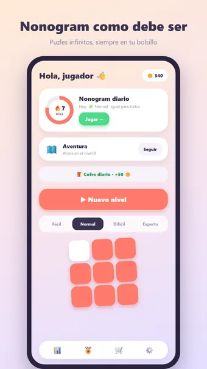
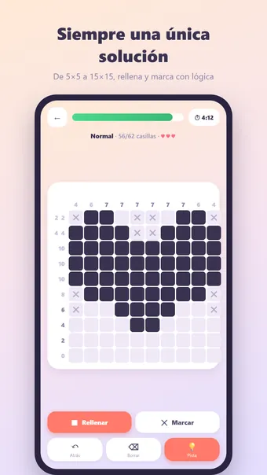
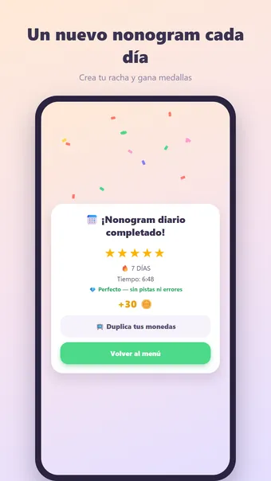
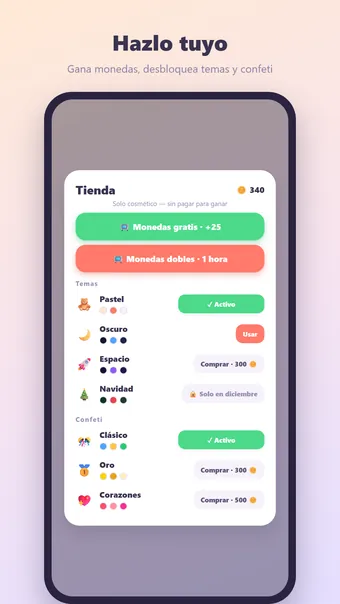

Sobre Nonogram
Juega al Nonogram, el clásico puzle japonés de lógica con imágenes — donde quieras y sin conexión. Los números junto a cada fila y encima de cada columna indican los bloques de casillas rellenas: ¡usa la lógica para averiguar qué casillas se rellenan y cuáles quedan vacías!
Cómo se juega
Cada nonogram se genera al momento y tiene garantizada una única solución a la que se llega solo con lógica: nunca hay que adivinar. Elige rellenar ■ o marcar ✕ y toca una casilla, o desliza para hacer una fila entera de una pasada. Rellenar una casilla que debe quedar vacía es un error; con 3 a 5 errores (según el tamaño de la cuadrícula) termina la partida.
Cuatro niveles de dificultad
- Fácil: 5×5, ideal para un descanso
- Normal: 10×10, el clásico del periódico
- Difícil: 12×12, para quien ya domina el juego
- Experto: 15×15 — para el auténtico puzlista
Modo aventura
Supera cientos de niveles numerados cada vez más difíciles. Viaja por mundos llenos de color, gana una medalla en cada nivel y consigue recompensas por hitos.
Nonogram diario
Cada día un nonogram único, el mismo para todos. Gana una medalla de 1 a 5 estrellas y construye una racha: ¡3, 7, 30 o incluso 100 días seguidos!
Monedas y temas
Gana monedas con cada nonogram completado y gástalas en pistas o nuevos estilos: Bosque, Espacio, Neón, Madera, Mármol, Navidad y Halloween. Solo cosmético — sin pay-to-win.
Y además
- Pistas con monedas: se rellena por ti la siguiente casilla correcta
- Las pistas se tachan en cuanto una línea es correcta, y las líneas terminadas se marcan solas
- 23 logros, desde tu primer nonogram hasta cien días seguidos
- Estadísticas detalladas: mejor tiempo, nonogramas sin errores y más
- Modo zen: oculta el cronómetro y resuelve a tu ritmo
- Sonido y vibración (desactivables en los ajustes)
- Disponible en español, inglés, neerlandés, alemán, francés y portugués
Gratis. La app muestra anuncios, que puedes quitar con una compra opcional; no necesitas cuenta.
Preguntas frecuentes
¿Nonogram es gratis?
Sí. Nonogram se descarga y se juega gratis. La app muestra anuncios, que puedes quitar con una compra opcional dentro de la app.
¿Nonogram funciona sin conexión?
Sí. Nonogram funciona sin conexión a internet, así que puedes jugar en el avión, en el tren o en cualquier sitio sin wifi.
¿Necesito una cuenta para jugar a Nonogram?
No. No hay que registrarse ni iniciar sesión: abre la app y juega. Tus partidas y ajustes se quedan en tu propio dispositivo.
¿Cómo se juega a Nonogram?
Cada nonogram se genera al momento y tiene garantizada una única solución a la que se llega solo con lógica: nunca hay que adivinar. Elige rellenar ■ o marcar ✕ y toca una casilla, o desliza para hacer una fila entera de una pasada. Rellenar una casilla que debe quedar vacía es un error; con 3 a 5 errores (según el tamaño de la cuadrícula) termina la partida.
¿Hay un reto nuevo cada día?
Cada día un nonogram único, el mismo para todos. Gana una medalla de 1 a 5 estrellas y construye una racha: ¡3, 7, 30 o incluso 100 días seguidos!
¿Dónde puedo descargar Nonogram?
Nonogram está disponible para móviles y tabletas Android en Google Play. Usa el botón de la parte superior de esta página.
Otros juegos que te pueden gustar
Sudoku
El sudoku clásico. Puzles infinitos y un reto nuevo cada día.
Google PlayBuscaminas
El buscaminas clásico. Campos de minas infinitos y un reto nuevo cada día.
Google PlayCrucigrama
El crucigrama clásico. Puzles infinitos y un reto diario nuevo.
Google PlayInformación legal
Aquí encontrarás los documentos legales que se aplican a Nonogram.
Contacto
¿Preguntas, comentarios o una solicitud de privacidad? Escribe a joostmuijsenberg.dev@gmail.com.